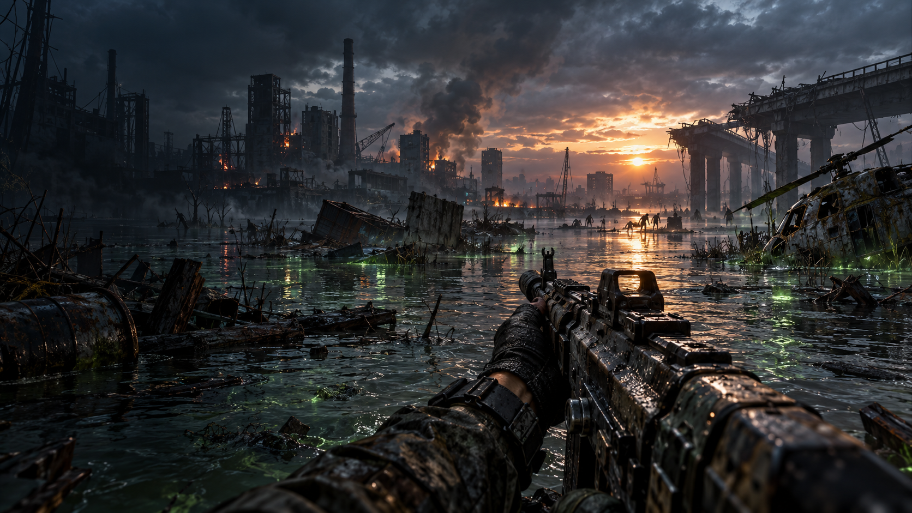
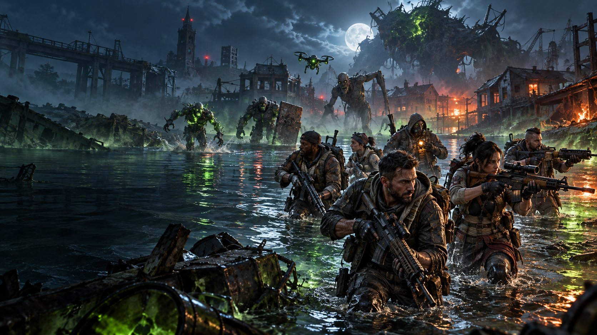
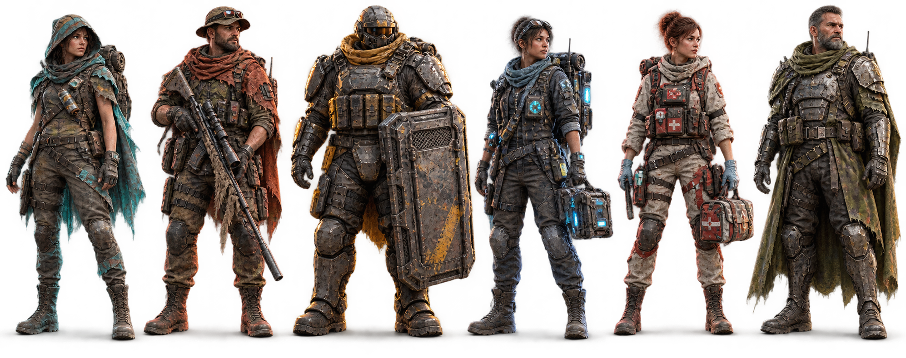
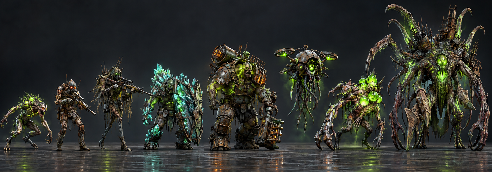

NIGHTFALL / WASTELAND SURVIVOR
3D Render Lab
Inspect the live game meshes, animation poses, lighting, and mobile budgets before they enter a match.
LIVE PREVIEWDrag to orbit · wheel to zoom
VISUAL TARGET DECK
Nightfall art direction
Character mode shows the survivor alone in a neutral 3D studio. Weapon, map, supply, and chest modes keep their environment reference boards so scale and material context remain visible.




Build status: six authored character meshes are now bundled under characters/3d and loaded as the primary 3D view. The isolated PNG renders under characters/renders remain as a graceful fallback, while the procedural rig stays available for animation comparison.